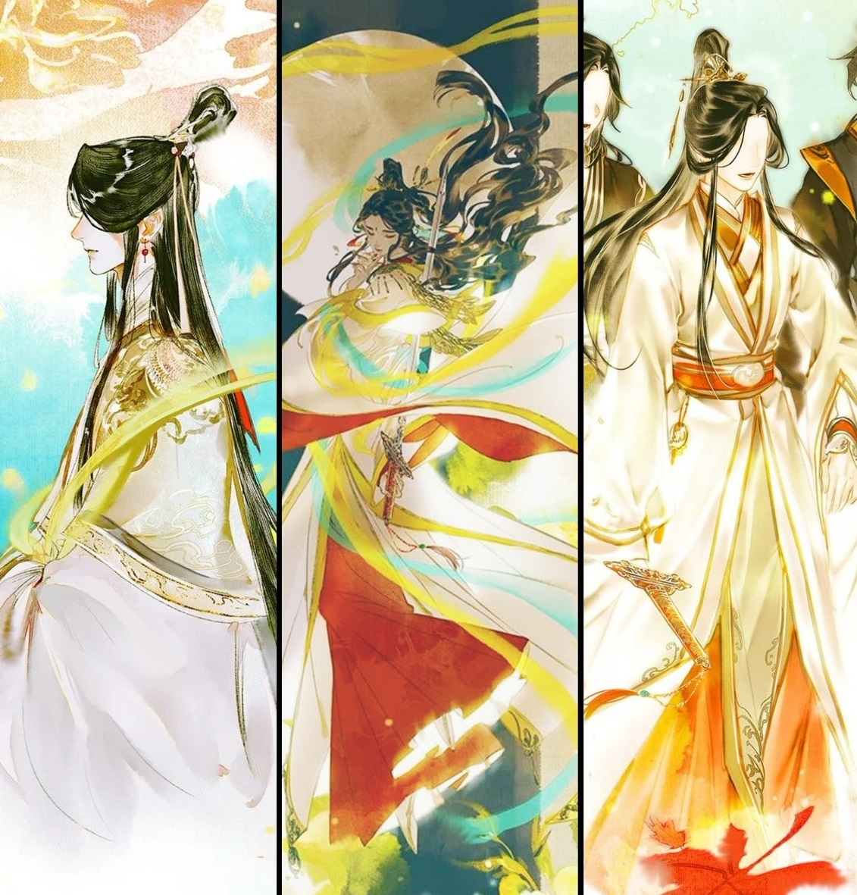
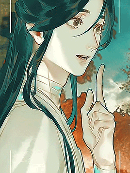
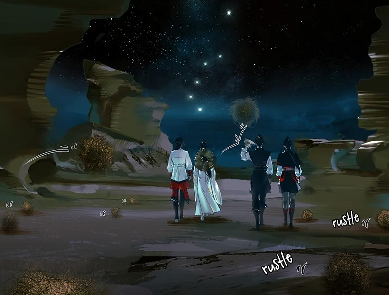

❛❛ Body in the abyss, heart in paradise. ❜❜
Introduction
800 years ago Xie Lian was known throughout the Xian Le nation as the beloved yet strange prince. Never showing interest in what was considered normal for a prince, he simply declared, "I want to save the common people!". Through practice, hard work, and insight beyond his years, he perfected his cultivation and ascended to the Heavens at the age of seventeen.
After multiple unfortunate events, he was twice banished from the Heavens. But now, 800 years later, he ascended for the third time, shocking the Heavens once more.
The Crown Prince of Xian Le.
About
Xie Lian is a kind and gentle person. Although he acknowledges his abilities, he remains a down-to-earth person. He is a compassionate man who only wants to help others, going so far as to bend the rules of Heaven. He is indifferent towards the opinions of others and does not hold grudges against them. While he does not forget past grievances, most are usually pushed to the back of his mind, and he is even willing to save those who have wronged him horribly in the past.
Despite having seen the worst that both humanity and the gods have done, he can also see the best in people, understanding even those that are hard to deal with.
❛❛ . . . Some things are best forgotten.
Rather than remembering how I was butchered and trampled hundered of years ago,
I'd rather remember that I ate a delicious meat bun yesterday. ❜❜
Characteristics
- As a former prince, he is well versed in all the arts such as music, dancing and calligraphy. He often sold goods, played instruments and sang songs on the streets after his second banishment.
- While he is terrible at household chores, such as cooking and sewing, he appears to be decent at fixing houses, building wells, walls and cleaning or patching up his home, which was originally a derelict and abandoned shrine.
- He has notoriously terrible luck, whether it pertains to gambling, drawing fortune sticks, or encountering tedious trouble.

Xie Lian collecting scraps in the mortal realm after his second vanishment.
Friends and Relationships
Xie Lian is deeply loyal to those who are kind to him and those he considers friends. He's maintained a long friendship with Feng Xin and Mu Qin, who used to be his subordinates. Another significant relationship in his life is the sworn brothership he holds with Hua Cheng, the Ghost King. Lastly but not the least, he's friends with whom used to be the Lord Wind Master, Shi Qingxuan.
Click on the links bellow to read more about them.
❛❛ Relationships should depend on chance
and whether if we are on the same wavelength, not on social status.
If I like you, you can be a beggar and I'd still like you.
If I dislike you, can be the emperor and I'd still dislike you.
Shouldn't it be like that? It's simple logic. ❜❜